009 13--python提高-2
13.1. 多继承以及MRO顺序¶
多继承以及MRO顺序¶
1. 单独调用父类的方法¶
# coding=utf-8 print("******多继承使用类名.__init__ 发生的状态******") class Parent(object): def __init__(self, name): print('parent的init开始被调用') self.name = name print('parent的init结束被调用') class Son1(Parent): def __init__(self, name, age): print('Son1的init开始被调用') self.age = age Parent.__init__(self, name) print('Son1的init结束被调用') class Son2(Parent): def __init__(self, name, gender): print('Son2的init开始被调用') self.gender = gender Parent.__init__(self, name) print('Son2的init结束被调用') class Grandson(Son1, Son2): def __init__(self, name, age, gender): print('Grandson的init开始被调用') Son1.__init__(self, name, age) # 单独调用父类的初始化方法 Son2.__init__(self, name, gender) print('Grandson的init结束被调用') gs = Grandson('grandson', 12, '男') print('姓名：', gs.name) print('年龄：', gs.age) print('性别：', gs.gender) print("******多继承使用类名.__init__ 发生的状态******\n\n")
运行结果:
******多继承使用类名.__init__ 发生的状态****** Grandson的init开始被调用 Son1的init开始被调用 parent的init开始被调用 parent的init结束被调用 Son1的init结束被调用 Son2的init开始被调用 parent的init开始被调用 #被继承了两次 parent的init结束被调用 Son2的init结束被调用 Grandson的init结束被调用 姓名： grandson 年龄： 12 性别： 男 ******多继承使用类名.__init__ 发生的状态******
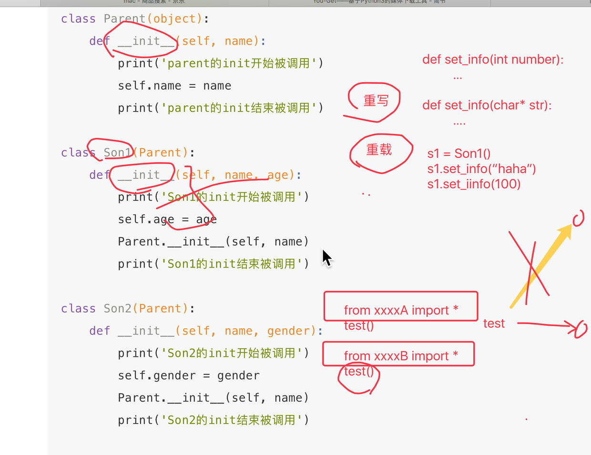
python 是动态类型的语言因此没有方法的重载只有方法的重写
2. 多继承中super调用有所父类的被重写的方法¶
print("******多继承使用super().__init__ 发生的状态******") class Parent(object): def __init__(self, name, *args, **kwargs): # 为避免多继承报错，使用不定长参数，接受参数 print('parent的init开始被调用') self.name = name print('parent的init结束被调用') class Son1(Parent): def __init__(self, name, age, *args, **kwargs): # 为避免多继承报错，使用不定长参数，接受参数 print('Son1的init开始被调用') self.age = age super().__init__(name, *args, **kwargs) # 为避免多继承报错，使用不定长参数，接受参数 print('Son1的init结束被调用') class Son2(Parent): def __init__(self, name, gender, *args, **kwargs): # 为避免多继承报错，使用不定长参数，接受参数 print('Son2的init开始被调用') self.gender = gender super().__init__(name, *args, **kwargs) # 为避免多继承报错，使用不定长参数，接受参数 print('Son2的init结束被调用') class Grandson(Son1, Son2): def __init__(self, name, age, gender): print('Grandson的init开始被调用') # 多继承时，相对于使用类名.__init__方法，要把每个父类全部写一遍 # 而super只用一句话，执行了全部父类的方法，这也是为何多继承需要全部传参的一个原因 # super(Grandson, self).__init__(name, age, gender) super().__init__(name, age, gender) print('Grandson的init结束被调用') print(Grandson.__mro__) #C3算法获得super调用父类时的顺序 gs = Grandson('grandson', 12, '男') print('姓名：', gs.name) print('年龄：', gs.age) print('性别：', gs.gender) print("******多继承使用super().__init__ 发生的状态******\n\n")
运行结果：
******多继承使用super().__init__ 发生的状态****** (<class '__main__.Grandson'>, <class '__main__.Son1'>, <class '__main__.Son2'>, <class '__main__.Parent'>, <class 'object'>) Grandson的init开始被调用 Son1的init开始被调用 Son2的init开始被调用 parent的init开始被调用 #只被调用了一次 parent的init结束被调用 Son2的init结束被调用 Son1的init结束被调用 Grandson的init结束被调用 姓名： grandson 年龄： 12 性别： 男 ******多继承使用super().__init__ 发生的状态******
注意：¶
- 以上2个代码执行的结果不同
- 如果2个子类中都继承了父类，当在子类中通过父类名调用时，parent被执行了2次
- 如果2个子类中都继承了父类，当在子类中通过super调用时，parent被执行了1次 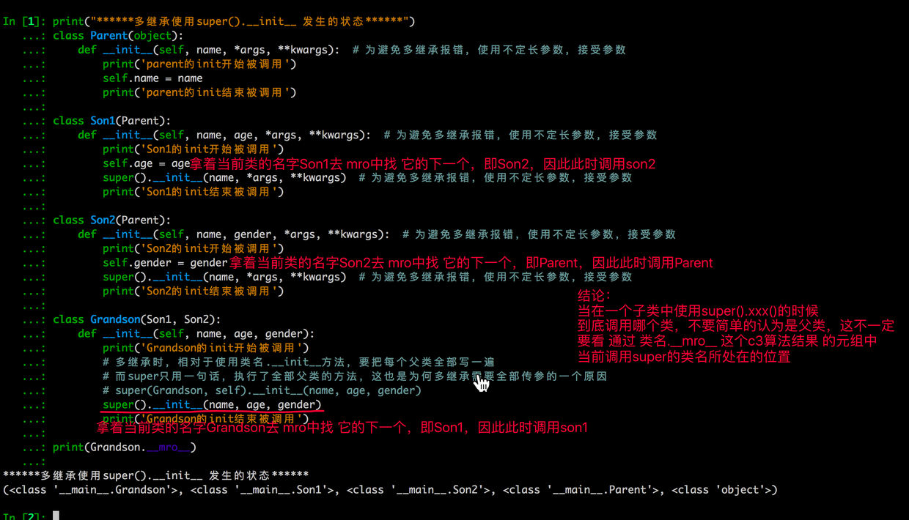
*args, **kwargs 解释¶
def test2(a, b, *args, **kwargs): print("------") print(a) print(b) print(args) print(kwargs) def test1(a, b, *args, **kwargs): print(a) print(b) print(args) print(kwargs) # test2(a, b, args, kwargs) # 相当于test2(11, 22, (33, 44, 55, 66), {"name":"laowang", "age":18}) # test2(a, b, *args, kwargs) # 相当于test2(11, 22, 33, 44, 55, 66, {"name":"laowang", "age":18}) test2(a, b, *args, **kwargs) # 相当于test2(11, 22, 33, 44, 55, 66, name="laowang", age=18) #所以传递参数也要使用这种形式类似于自动拆包 #*args, **kwargs不仅是可以放在型参中,也是可以放在实参中的 test1(11, 22, 33, 44, 55, 66, name="laowang", age=18)
运行结果
11 22 (33, 44, 55, 66) {'name': 'laowang', 'age': 18} ------ 11 22 (33, 44, 55, 66) {'name': 'laowang', 'age': 18}
3. 单继承中super¶
print("******单继承使用super().__init__ 发生的状态******") class Parent(object): def __init__(self, name): print('parent的init开始被调用') self.name = name print('parent的init结束被调用') class Son1(Parent): def __init__(self, name, age): print('Son1的init开始被调用') self.age = age super().__init__(name) # 单继承不能提供全部参数 print('Son1的init结束被调用') class Grandson(Son1): def __init__(self, name, age, gender): print('Grandson的init开始被调用') super().__init__(name, age) # 单继承不能提供全部参数 print('Grandson的init结束被调用') gs = Grandson('grandson', 12, '男') print('姓名：', gs.name) print('年龄：', gs.age) #print('性别：', gs.gender) print("******单继承使用super().__init__ 发生的状态******\n\n")
运行结果
******单继承使用super().__init__ 发生的状态****** Grandson的init开始被调用 Son1的init开始被调用 parent的init开始被调用 parent的init结束被调用 Son1的init结束被调用 Grandson的init结束被调用 姓名： grandson 年龄： 12 ******单继承使用super().__init__ 发生的状态******
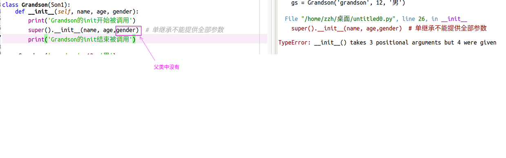
总结¶
- super().init__相对于类名.__init，在单继承上用法基本无差
- 但在多继承上有区别，super方法能保证每个父类的方法只会执行一次，而使用类名的方法会导致方法被执行多次，具体看前面的输出结果
- 多继承时，使用super方法，对父类的传参数，应该是由于python中super的算法导致的原因，必须把参数全部传递，否则会报错
- 单继承时，使用super方法，则不能全部传递，只能传父类方法所需的参数，否则会报错
- 多继承时，相对于使用类名.__init__方法，要把每个父类全部写一遍, 而使用super方法，只需写一句话便执行了全部父类的方法，这也是为何多继承需要全部传参的一个原因
小试牛刀(以下为面试题)¶
以下的代码的输出将是什么? 说出你的答案并解释。
class Parent(object): x = 1 class Child1(Parent): pass class Child2(Parent): pass print(Parent.x, Child1.x, Child2.x) Child1.x = 2 print(Parent.x, Child1.x, Child2.x) Parent.x = 3 print(Parent.x, Child1.x, Child2.x)
答案, 以上代码的输出是：
1 1 1 1 2 1 3 2 3
使你困惑或是惊奇的是关于最后一行的输出是 3 2 3 而不是 3 2 1。为什么改变了 Parent.x 的值还会改变 Child2.x 的值，但是同时 Child1.x 值却没有改变？
这个答案的关键是，在 Python 中，类变量在内部是作为字典处理的。如果一个变量的名字没有在当前类的字典中发现，将搜索祖先类（比如父类）直到被引用的变量名被找到（如果这个被引用的变量名既没有在自己所在的类又没有在祖先类中找到，会引发一个 AttributeError 异常 ）。
因此，在父类中设置 x = 1 会使得类变量 x 在引用该类和其任何子类中的值为 1。这就是因为第一个 print 语句的输出是 1 1 1。
随后，如果任何它的子类重写了该值（例如，我们执行语句 Child1.x = 2），然后，该值仅仅在子类中被改变。这就是为什么第二个 print 语句的输出是 1 2 1。
最后，如果该值在父类中被改变（例如，我们执行语句 Parent.x = 3），这个改变会影响到任何未重写该值的子类当中的值（在这个示例中被影响的子类是 Child2）。这就是为什么第三个 print 输出是 3 2 3。
13.2 再论静态方法和类方法¶
再论静态方法和类方法¶
1. 类属性、实例属性¶
它们在定义和使用中有所区别，而最本质的区别是内存中保存的位置不同，
- 实例属性属于对象
- 类属性属于类
class Province(object): # 类属性 country = '中国' def __init__(self, name): # 实例属性 self.name = name # 创建一个实例对象 obj = Province('山东省') # 直接访问实例属性 print(obj.name) # 直接访问类属性 Province.country
由上述代码可以看出【实例属性需要通过对象来访问】【类属性通过类访问】，在使用上可以看出实例属性和类属性的归属是不同的。
其在内容的存储方式类似如下图：
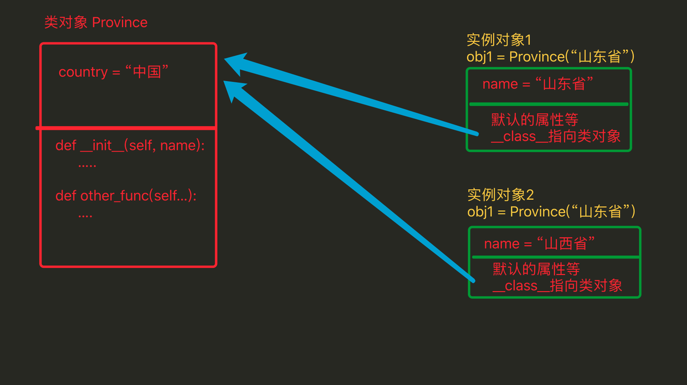
由上图看出：
- 类属性在内存中只保存一份
- 实例属性在每个对象中都要保存一份
应用场景：¶
- 通过类创建实例对象时，如果每个对象需要具有相同名字的属性，那么就使用类属性，用一份既可
2. 实例方法、静态方法和类方法¶
方法包括：实例方法、静态方法和类方法，三种方法在内存中都归属于类，区别在于调用方式不同。
- 实例方法：由对象调用；至少一个self参数；执行实例方法时，自动将调用该方法的对象赋值给self；
- 类方法：由类调用； 至少一个cls参数；执行类方法时，自动将调用该方法的类赋值给cls；
- 静态方法：由类调用；无默认参数；
#!/usr/bin/env python3 # -*- coding: utf-8 -*- """ Created on Thu Aug 8 22:52:19 2019 @author: zzh """ class Foo(object): def __init__(self, name): self.name = name def ord_func(self): """ 定义实例方法，至少有一个self参数 """ # print(self.name) print('实例方法') @classmethod def class_func(cls): """ 定义类方法，至少有一个cls参数 """ print('类方法') @staticmethod def static_func(): #(主要是防止出现又有类又有类外的函数出现) """ 定义静态方法 ，无默认参数""" print('静态方法') f = Foo("中国") # 调用实例方法 f.ord_func() # 调用类方法 Foo.class_func() # 调用静态方法 Foo.static_func()
运行结果
实例方法 类方法 静态方法
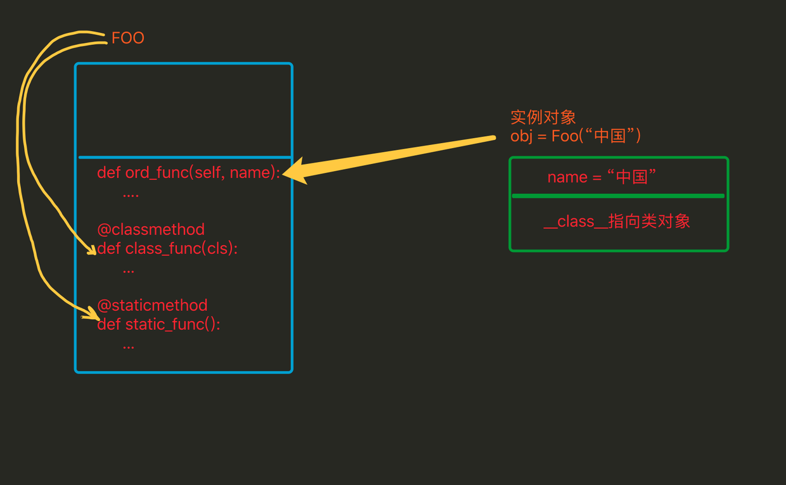
对比¶
- 相同点：对于所有的方法而言，均属于类，所以 在内存中也只保存一份
- 不同点：方法调用者不同、调用方法时自动传入的参数不同。
注意: 类对象只能调用类属性及类方法,实例对象三类都可进行调用.
property属性¶
1. 什么是property属性¶
一种用起来像是使用的实例属性一样的特殊属性，可以对应于某个方法(不用对这个方法加括号)
# ############### 定义 ############### class Foo: def func(self): pass # 定义property属性 @property def prop(self): pass # ############### 调用 ############### foo_obj = Foo() foo_obj.func() # 调用实例方法 foo_obj.prop # 调用property属性
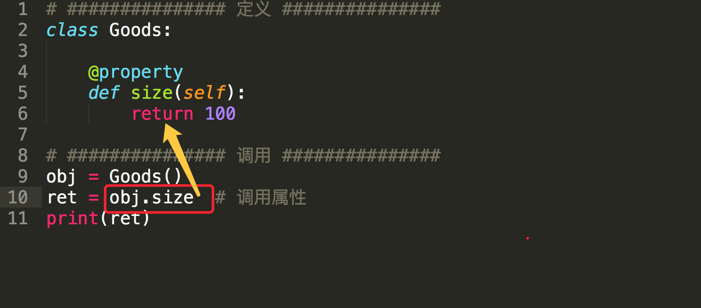
property属性的定义和调用要注意一下几点：¶
-
定义时，在实例方法的基础上添加 @property 装饰器；并且仅有一个self参数
-
调用时，无需括号
python 方法：foo_obj.func() property属性：foo_obj.prop
2. 简单的实例¶
对于京东商城中显示电脑主机的列表页面，每次请求不可能把数据库中的所有内容都显示到页面上，而是通过分页的功能局部显示，所以在向数据库中请求数据时就要显示的指定获取从第m条到第n条的所有数据 这个分页的功能包括：
- 根据用户请求的当前页和总数据条数计算出 m 和 n
- 根据m 和 n 去数据库中请求数据
#!/usr/bin/env python3 # -*- coding: utf-8 -*- """ Created on Thu Aug 8 22:52:19 2019 @author: zzh """ # ############### 定义 ############### class Pager: def __init__(self, current_page): # 用户当前请求的页码（第一页、第二页...） self.current_page = current_page # 每页默认显示10条数据 self.per_items = 10 @property def start(self): val = (self.current_page - 1) * self.per_items return val @property def end(self): val = self.current_page * self.per_items return val if __name__ == "__main__": # ############### 调用 ############### p = Pager(1) print(p.start) # 就是起始值，即：m print(p.end) # 就是结束值，即：n p = Pager(100) print(p.start) # 就是起始值，即：m print(p.end) # 就是结束值，即：n
执行结果
0 10 990 1000
从上述可见¶
- Python的property属性的功能是：property属性内部进行一系列的逻辑计算，最终将计算结果返回。(复杂的计算封装到方法里进行计算,但是调用的时候使用属性进行调用.这是封装的好处,而且比使用方法的好处是不用考虑传递几个参数,这样会方便很多)
3. property属性的有两种方式¶
- 装饰器 即：在方法上应用装饰器
- 类属性 即：在类中定义值为property对象的类属性
3.1 装饰器方式¶
在类的实例方法上应用@property装饰器
Python中的类有经典类和新式类，新式类的属性比经典类的属性丰富。（ 如果类继object，那么该类是新式类 ）
经典类，具有一种@property装饰器¶
# ############### 定义 ############### class Goods: @property def price(self): return "laowang" # ############### 调用 ############### obj = Goods() result = obj.price # 自动执行 @property 修饰的 price 方法，并获取方法的返回值 print(result)
新式类，具有三种@property装饰器¶
#coding=utf-8 # ############### 定义 ############### class Goods: """python3中默认继承object类 以python2、3执行此程序的结果不同，因为只有在python3中才有@xxx.setter @xxx.deleter """ @property def price(self): print('@property') @price.setter def price(self, value): print('@price.setter') @price.deleter def price(self): print('@price.deleter') # ############### 调用 ############### obj = Goods() obj.price # 自动执行 @property 修饰的 price 方法，并获取方法的返回值 obj.price = 123 # 自动执行 @price.setter 修饰的 price 方法，并将 123 赋值给方法的参数 del obj.price # 自动执行 @price.deleter 修饰的 price 方法
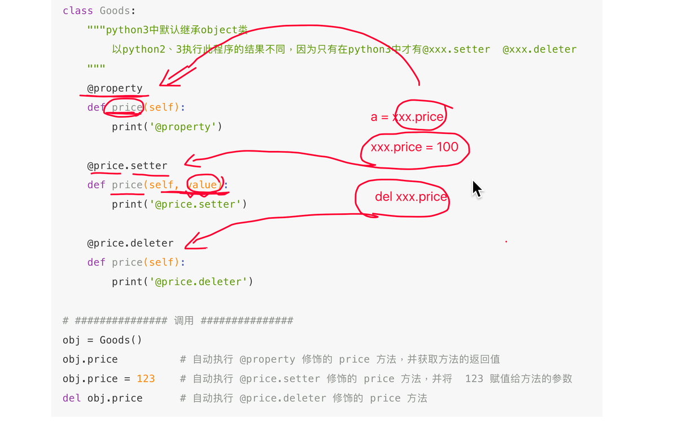
注意¶
- 经典类中的属性只有一种访问方式，其对应被 @property 修饰的方法
- 新式类中的属性有三种访问方式，并分别对应了三个被@property、@方法名.setter、@方法名.deleter修饰的方法
由于新式类中具有三种访问方式，我们可以根据它们几个属性的访问特点，分别将三个方法定义为对同一个属性：获取、修改、删除(主要就是为了用的时候简介)
class Goods(object): def __init__(self): # 原价 self.original_price = 100 # 折扣 self.discount = 0.8 @property def price(self): # 实际价格 = 原价 * 折扣 new_price = self.original_price * self.discount return new_price @price.setter def price(self, value): self.original_price = value #可以作一些修改 @price.deleter def price(self): del self.original_price #删除实例属性 obj = Goods() obj.price # 获取商品价格 obj.price = 200 # 修改商品原价 del obj.price # 删除商品原价
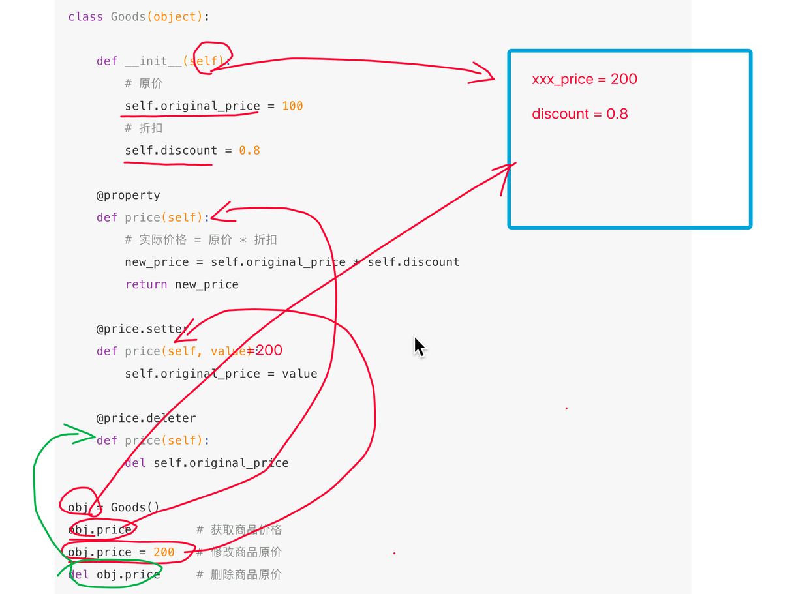
一般用的就是获取根设置的属性 @property @price.setter(设置)
3.2 类属性方式，创建值为property对象的类属性¶
- 当使用类属性的方式创建property属性时，
经典类和新式类无区别
class Foo: def get_bar(self): return 'laowang' BAR = property(get_bar) #相当于类属性,只不过是对象方法的返回值 obj = Foo() reuslt = obj.BAR # 自动调用get_bar方法，并获取方法的返回值 print(reuslt)
property方法中有个四个参数
- 第一个参数是方法名，调用 对象.属性 时自动触发执行方法
- 第二个参数是方法名，调用 对象.属性 ＝ XXX 时自动触发执行方法
- 第三个参数是方法名，调用 del 对象.属性 时自动触发执行方法
- 第四个参数是字符串，调用 对象.属性.doc ，此参数是该属性的描述信息
#coding=utf-8 class Foo(object): def get_bar(self): print("getter...") return 'laowang' def set_bar(self, value): """必须两个参数""" print("setter...") return 'set value' + value def del_bar(self): print("deleter...") return 'laowang' BAR = property(get_bar, set_bar, del_bar, "description...") obj = Foo() obj.BAR # 自动调用第一个参数中定义的方法：get_bar obj.BAR = "alex" # 自动调用第二个参数中定义的方法：set_bar方法，并将“alex”当作参数传入 desc = Foo.BAR.__doc__ # 自动获取第四个参数中设置的值：description... print(desc) del obj.BAR # 自动调用第三个参数中定义的方法：del_bar方法
由于类属性方式创建property属性具有3种访问方式，我们可以根据它们几个属性的访问特点，分别将三个方法定义为对同一个属性：获取、修改、删除
class Goods(object): def __init__(self): # 原价 self.original_price = 100 # 折扣 self.discount = 0.8 def get_price(self): # 实际价格 = 原价 * 折扣 new_price = self.original_price * self.discount return new_price def set_price(self, value): self.original_price = value def del_price(self): del self.original_price PRICE = property(get_price, set_price, del_price, '价格属性描述...') obj = Goods() obj.PRICE # 获取商品价格 obj.PRICE = 200 # 修改商品原价 del obj.PRICE # 删除商品原价
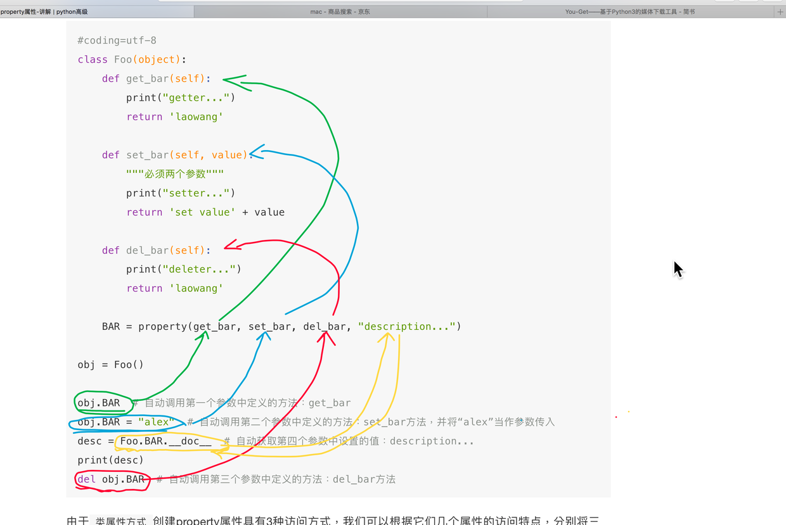
4. Django框架中应用了property属性（了解）¶
WEB框架 Django 的视图中 request.POST 就是使用的类属性的方式创建的属性
class WSGIRequest(http.HttpRequest): def __init__(self, environ): script_name = get_script_name(environ) path_info = get_path_info(environ) if not path_info: # Sometimes PATH_INFO exists, but is empty (e.g. accessing # the SCRIPT_NAME URL without a trailing slash). We really need to # operate as if they'd requested '/'. Not amazingly nice to force # the path like this, but should be harmless. path_info = '/' self.environ = environ self.path_info = path_info self.path = '%s/%s' % (script_name.rstrip('/'), path_info.lstrip('/')) self.META = environ self.META['PATH_INFO'] = path_info self.META['SCRIPT_NAME'] = script_name self.method = environ['REQUEST_METHOD'].upper() _, content_params = cgi.parse_header(environ.get('CONTENT_TYPE', '')) if 'charset' in content_params: try: codecs.lookup(content_params['charset']) except LookupError: pass else: self.encoding = content_params['charset'] self._post_parse_error = False try: content_length = int(environ.get('CONTENT_LENGTH')) except (ValueError, TypeError): content_length = 0 self._stream = LimitedStream(self.environ['wsgi.input'], content_length) self._read_started = False self.resolver_match = None def _get_scheme(self): return self.environ.get('wsgi.url_scheme') def _get_request(self): warnings.warn('`request.REQUEST` is deprecated, use `request.GET` or ' '`request.POST` instead.', RemovedInDjango19Warning, 2) if not hasattr(self, '_request'): self._request = datastructures.MergeDict(self.POST, self.GET) return self._request @cached_property def GET(self): # The WSGI spec says 'QUERY_STRING' may be absent. raw_query_string = get_bytes_from_wsgi(self.environ, 'QUERY_STRING', '') return http.QueryDict(raw_query_string, encoding=self._encoding) # ############### 看这里看这里 ############### def _get_post(self): if not hasattr(self, '_post'): self._load_post_and_files() return self._post # ############### 看这里看这里 ############### def _set_post(self, post): self._post = post @cached_property def COOKIES(self): raw_cookie = get_str_from_wsgi(self.environ, 'HTTP_COOKIE', '') return http.parse_cookie(raw_cookie) def _get_files(self): if not hasattr(self, '_files'): self._load_post_and_files() return self._files # ############### 看这里看这里 ############### POST = property(_get_post, _set_post) FILES = property(_get_files) REQUEST = property(_get_request)
综上所述:¶
- 定义property属性共有两种方式，分别是【装饰器】和【类属性】，而【装饰器】方式针对经典类和新式类又有所不同。
- 通过使用property属性，能够简化调用者在获取数据的流程
13.4property属性-应用¶
1. 私有属性添加getter和setter方法(python一般是不用的)¶
class Money(object): def __init__(self): self.__money = 0 #私有属性 def getMoney(self): #get方法 return self.__money def setMoney(self, value): #set方法 if isinstance(value, int): self.__money = value else: print("error:不是整型数字")
2. 使用property升级getter和setter方法¶
class Money(object): def __init__(self): self.__money = 0 def getMoney(self): return self.__money def setMoney(self, value): if isinstance(value, int): self.__money = value else: print("error:不是整型数字") # 定义一个属性，当对这个money设置值时调用setMoney,当获取值时调用getMoney money = property(getMoney, setMoney) #类属性 a = Money() a.money = 100 # 调用setMoney方法 print(a.money) # 调用getMoney方法 #100
3. 使用property取代getter和setter方法¶
- 重新实现一个属性的设置和读取方法,可做边界判定
class Money(object): def __init__(self): self.__money = 0 # 使用装饰器对money进行装饰，那么会自动添加一个叫money的属性，当调用获取money的值时，调用装饰的方法 @property def money(self): return self.__money # 使用装饰器对money进行装饰，当对money设置值时，调用装饰的方法 @money.setter def money(self, value): if isinstance(value, int): self.__money = value else: print("error:不是整型数字") a = Money() a.money = 100 print(a.money)
13.5 魔法属性¶
无论人或事物往往都有不按套路出牌的情况，Python的类属性也是如此，存在着一些具有特殊含义的属性，详情如下：
1. __doc__¶
- 表示类的描述信息
class Foo: """ 描述类信息，这是用于看片的神奇 """ #类的描述信息 def func(self): pass print(Foo.__doc__)
执行结果
描述类信息，这是用于看片的神奇
也可以使用help函数获得同样的效果
help(Foo) Help on class Foo in module __main__: class Foo(builtins.object) | 描述类信息，这是用于看片的神奇 | | Methods defined here: | | func(self) | | ---------------------------------------------------------------------- | Data descriptors defined here: | | __dict__ | dictionary for instance variables (if defined) | | __weakref__ | list of weak references to the object (if defined)
2. __module__ 和 __class__¶
- module 表示当前操作的对象在那个模块
- class 表示当前操作的对象的类是什么
test.py # -*- coding:utf-8 -*- class Person(object): def __init__(self): self.name = 'laowang' main.py from test import Person obj = Person() print(obj.__module__) # 输出 test 即：输出模块 print(obj.__class__) # 输出 test.Person 即：输出类
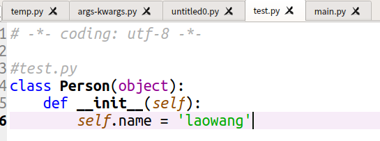
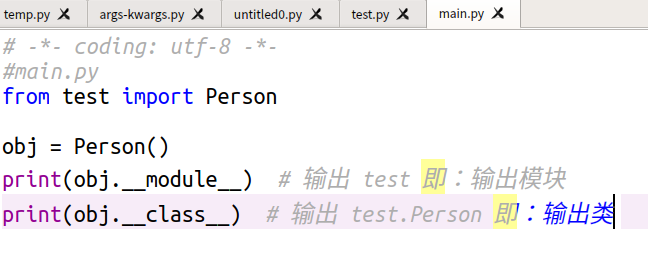
执行main.py
test <class 'test.Person'>
3.__init__¶
- 初始化方法，通过类创建对象时，自动触发执行
class Person: def __init__(self, name): self.name = name self.age = 18 obj = Person('laowang') # 自动执行类中的 __init__ 方法
4. __del__¶
- 当对象在内存中被释放时，自动触发执行。
注：此方法一般无须定义，因为Python是一门高级语言，程序员在使用时无需关心内存的分配和释放，因为此工作都是交给Python解释器来执行，所以，__del__的调用是由解释器在进行垃圾回收时自动触发执行的。
class Foo: def __del__(self): pass
5. __call__¶
- 对象后面加括号，触发执行。
注：__init__方法的执行是由创建对象触发的，即：对象 = 类名() ；而对于 __call__方法的执行是由对象后加括号触发的，即：对象() 或者 类()()
class Foo: def __init__(self): pass def __call__(self, *args, **kwargs): print('__call__') print("我是call方法") obj = Foo() # 执行 __init__ obj() # 执行 __call__
执行结果
__call__ 我是call方法
6. __dict__¶
- 类或对象中的所有属性
类的实例属性属于对象；类中的类属性和方法等属于类，即：
class Province(object): country = 'China' def __init__(self, name, count): self.name = name self.count = count def func(self, *args, **kwargs): print('func') # 获取类的属性，即：类属性、方法、 print(Province.__dict__) # 输出：{'__dict__': <attribute '__dict__' of 'Province' objects>, '__module__': '__main__', 'country': 'China', '__doc__': None, '__weakref__': <attribute '__weakref__' of 'Province' objects>, 'func': <function Province.func at 0x101897950>, '__init__': <function Province.__init__ at 0x1018978c8>} obj1 = Province('山东', 10000) print(obj1.__dict__) # 获取 对象obj1 的属性 # 输出：{'count': 10000, 'name': '山东'} obj2 = Province('山西', 20000) print(obj2.__dict__) # 获取 对象obj1 的属性 # 输出：{'count': 20000, 'name': '山西'}
7.__str__¶
- 如果一个类中定义了
__str__方法，那么在打印 对象 时，默认输出该方法的返回值。
obj = Foo()# -*- coding: utf-8 -*- #main.py class Foo: def __str__(self): return 'laowang' obj = Foo() print(obj) #根对象()进行区别 # 输出：laowang print("对象的描述 % s"%obj) #使用格式化字符串也是可以得到对象的str描述的 print(obj) #根对象()进行区别 # 输出：laowang
执行
laowang 对象的描述 laowang
8、__getitem__、__setitem__、__delitem__¶
- 用于索引操作，如字典。以上分别表示获取、设置、删除数据
# -*- coding:utf-8 -*- class Foo(object): def __getitem__(self, key): print('__getitem__', key) def __setitem__(self, key, value): print('__setitem__', key, value) def __delitem__(self, key): print('__delitem__', key) obj = Foo() result = obj['k1'] # 自动触发执行 __getitem__ obj['k2'] = 'laowang' # 自动触发执行 __setitem__ del obj['k1'] # 自动触发执行 __delitem__
9、__getslice__、__setslice__、__delslice__¶
- 该三个方法用于分片操作，如：列表
# -*- coding:utf-8 -*- class Foo(object): def __getslice__(self, i, j): print('__getslice__', i, j) def __setslice__(self, i, j, sequence): print('__setslice__', i, j) def __delslice__(self, i, j): print('__delslice__', i, j) obj = Foo() obj[-1:1] # 自动触发执行 __getslice__ obj[0:1] = [11,22,33,44] # 自动触发执行 __setslice__ del obj[0:2] # 自动触发执行 __delslice__
13.6 面向对象设计¶
- 继承 - 是基于Python中的属性查找(如X.name)
- 多态 - 在X.method方法中，method的意义取决于X的类型(子类重写了用字类的,没有重写用父类的.同样是开车,父亲开大货车,儿子开小货车.这就是多态)
- 封装 - 方法和运算符实现行为，数据隐藏默认是一种惯例
参考实例¶
腾讯即时通信模块,初级封装
#! /usr/bin/env python # coding: utf-8 import random import time class Message(object): def __init__(self, msgarr=[], toacc=''): self.msgbody = msgarr # 此处为MsgDict对象实例的列表或者空列表 self.toacc = toacc # toacc为字符串(单发)或者列表(批量发) self.msgrandom = random.randint(1, 1000000000) self.msgrequest = { 'To_Account': toacc, # 消息接收方账号 'MsgRandom': self.msgrandom, # 消息随机数，由随机函数产生 'MsgBody': [t.msg for t in msgarr] } def del_option(self, option): if option in (set(self.msgrequest)-set(['To_Account', 'MsgRandom', 'MsgBody'])): self.__dict__.pop(option) self.msgrequest.pop(option) def append_msg(self, msg): self.msgbody.append(msg) self.msgrequest['MsgBody'].append(msg.msg) def insert_msg(self, index, msg): self.msgbody.insert(index, msg) self.msgrequest['MsgBody'].insert(msg.msg) def del_msg(self, index): if index in range(len(self.msgbody)): del self.msgbody[index] del sel.msgrequest['MsgBody'][index] def set_from(self, fromacc): # 指定消息的发送方，默认为服务器发送 self.fromacc = fromacc self.msgrequest['From_Account'] = fromacc def set_to(self, toacc): # 指定消息的接收方，可以为String(单发),可以为List(批量发送) self.toacc = toacc self.msgrequest['To_Account'] = toacc def refresh_random(self): self.msgrandom = random.randint(1, 1000000000) self.msgrequest['MsgRandom'] = self.msgrandom, # 消息随机数，由随机函数产生 def set_sync(self, sync): # 同步选项：1, 把消息同步到From_Account在线终端和漫游上 # 2, 消息不同步至From_Account # 若不填写，默认情况下会将消息同步 # 仅在单发单聊消息中可调用 self.sync = sync self.msgrequest['SyncOtherMachine'] = sync def set_timestamp(self): # 设置消息时间戳，unix时间, 仅在单发单聊消息中可以调用 self.timestamp = int(time.time()) self.msgrequest['MsgTimeStamp'] = self.timestamp def set_offlinepush(self, pushflag=0, desc='', ext='', sound=''): # 仅适用于APNa推送，不适用于安卓厂商推送 self.msgrequest['OfflinePushInfo'] = { 'PushFlag': pushflag, 'Desc': desc, 'Ext': ext, 'Sound': sound } class MsgDict(object): def __init__(self, msgtype='', msgcontent={}): self.msgtype = msgtype self.msgcontent = msgcontent @property def msg(self): return { 'MsgType': self.msgtype, 'MsgContent': self.msgcontent } def set_content(self, content): self.msgcontent = content class TextMsg(MsgDict): def __init__(self, text='', msgtype='TIMTextElem'): self.text = text content = {'Text': text} super(TextMsg, self).__init__(msgtype=msgtype, msgcontent=content) def set_text(self, text): self.text = text self.msgcontent['Text'] = text class LocationMsg(MsgDict): def __init__(self, desc='', latitude=0, longitude=0, msgtype='TIMLocationElem'): self.desc = desc self.latitude = latitude self.longitude = longitude content = { 'Desc': desc, # 地理位置描述信息, String 'Latitude': latitude, # 纬度, Number 'Longitude': longitude # 经度, Number } super(LocationMsg, self).__init__(msgtype=msgtype, msgcontent=content) def set_desc(self, desc): self.desc = desc self.msgcontent['Desc'] = desc def set_location(self, latitude, longitude): self.latitude = latitude self.longitude = longitude self.msgcontent['Latitude'] = latitude self.msgcontent['Longitude'] = longitude def set_latitude(self, latitude): self.latitude = latitude self.msgcontent['Latitude'] = latitude def set_longitude(self, longitude): self.longitude = longitude self.msgcontent['Longitude'] = longitude class FaceMsg(MsgDict): def __init__(self, index=1, data='', msgtype='TIMFaceElem'): self.index = index self.data = data content = { 'Index': index, # 表情索引，用户自定义, Number 'Data': data # 额外数据, String } super(TextMsg, self).__init__(msgtype=msgtype, msgcontent=content) def set_index(self, index): self.index = index self.msgcontent['Index'] = index def set_data(self, data): self.data = data self.msgcontent['Data'] = data class CustomMsg(MsgDict): def __init__(self, data='', desc='', ext='', sound='', msgtype='TIMCustomElem'): self.data = data self.desc = desc self.ext = ext self.sound = sound content = { 'Data': data, # 自定义消息数据。不作为APNS的payload中字段下发，故从payload中无法获取Data字段, String 'Desc': desc, # 自定义消息描述，当接收方为iphone后台在线时，做ios离线Push时文本展示 'Ext': ext, # 扩展字段，当接收方为ios系统且应用处在后台时，此字段作为APNS请求包Payloads中的ext键值下发，Ext的协议格式由业务方确定，APNS只做透传 'Sound': sound # 自定义APNS推送铃声 } super(CustomMsg, self).__init__(msgtype=msgtype, msgcontent=content) def set_data(self, data): self.data = data self.msgcontent['Data'] = data def set_desc(self, desc): self.desc = desc self.msgcontent['Desc'] = desc def set_ext(self, ext): self.ext = ext self.msgcontent['Ext'] = ext def set_sound(self, sound): self.sound = sound self.msgcontent['Sound'] = sound class SoundMsg(MsgDict): def __init__(self, uuid='', size=0, second=0, msgtype='TIMSoundElem'): self.uuid = uuid self.size = size self.second = second content = { 'UUID': uuid, # 语音序列号，后台用于索引语音的键值，String 'Size': size, # 语音数据大小, Number 'Second': second # 语音时长，单位秒 Number } super(SoundMsg, self).__init__(msgtype=msgtype, msgcontent=content) def set_uuid(self, uuid): self.uuid = uuid self.msgcontent['UUID'] = uuid def set_size(self, size): self.size = size self.msgcontent['Size'] = size def set_second(self, second): self.second = second self.msgcontent['Second'] = second class ImageMsg(MsgDict): def __init__(self, uuid='', imgformat=0, imginfo=[], msgtype='TIMImageElem'): self.uuid = uuid self.imgformat = imgformat self.imginfo = imginfo content = { 'UUID': uuid, # 图片序列号，后台用于索引语音的键值，String 'ImageFormat': imgformat, # 图片格式， BMP=1, JPG=2, GIF=3, 其他=0, Number 'ImageInfoArray': [t.info for t in imginfo] # 原图，缩略图或者大图下载信息, Array } super(ImageMsg, self).__init__(msgtype=msgtype, msgcontent=content) def set_uuid(self, uuid): self.uuid = uuid self.msgcontent['UUID'] = uuid def set_format(self, imgformat): self.imgformat = imgformat self.msgcontent['ImageFormat'] = imgformat def append_info(self, info): # info 为ImageInfo对象实例 self.imginfo.append(info) self.msgcontnet['ImageInfoArray'].append(info.info) def insert_info(self, index, info): self.imginfo.insert(index, info) self.msgcontent['ImageInfoArray'].insert(index, info.info) def del_info(self, index): del self.imginfo[index] del self.msgcontent['ImageInfoArray'][index] class FileMsg(MsgDict): def __init__(self, uuid='', size=0, name='', msgtype='TIMFileElem'): self.uuid = uuid self.size = size self.name = name content = { 'UUID': uuid, # 文件序列号，后台用于索引语音的键值，String 'FileSize': size, # 文件数据大小, Number 'FileName': name # 文件名称/路径， String } super(FileMsg, self).__init__(msgtype=msgtype, msgcontent=content) def set_uuid(self, uuid): self.uuid = uuid self.msgcontent['UUID'] = UUID def set_size(self, size): self.size = size self.msgcontent['FileSize'] = size def set_name(self, name): self.name = name self.msgcontent['FileName'] = name class ImageInfo(object): def __init__(self, itype=1, size=0, width=0, height=0, url=''): #图片类型， 1-原图， 2-大图， 3-缩略图, 0-其他 self.itype = itype # 图片数据大小,Number self.size = size # 图片宽度,Number self.width = width # 图片高度, Number self.height = height # 图片下载地址,String self.url = url @property def info(self): return { 'Type': self.itype, 'Size': self.size, 'Width': self.width, 'Height': self.height, 'URL': self.url } def set_type(self, itype): self.itype = itype def set_size(self, size): self.size = size def set_width(self, width): self.width = width def set_height(self, height): self.height = height def set_url(self, url): self.url = url
微信开发包，python实现, wechat_sdk开发¶
http://wechat-python-sdk.com/
截取部分代码，学习类的设计
from __future__ import unicode_literals import time from wechat_sdk.lib.crypto import BasicCrypto from wechat_sdk.lib.request import WechatRequest from wechat_sdk.exceptions import NeedParamError from wechat_sdk.utils import disable_urllib3_warning class WechatConf(object): """ WechatConf 配置类 该类将会存储所有和微信开发相关的配置信息, 同时也会维护配置信息的有效性. """ def __init__(self, **kwargs): """ :param kwargs: 配置信息字典, 可用字典 key 值及对应解释如下: 'token': 微信 Token 'appid': App ID 'appsecret': App Secret 'encrypt_mode': 加解密模式 ('normal': 明文模式, 'compatible': 兼容模式, 'safe': 安全模式(默认)) 'encoding_aes_key': EncodingAESKey 值 (传入此值必须保证同时传入 token, appid, 否则抛出异常) 'access_token_getfunc': access token 获取函数 (用于单机及分布式环境下, 具体格式参见文档) 'access_token_setfunc': access token 写入函数 (用于单机及分布式环境下, 具体格式参见文档) 'access_token_refreshfunc': access token 刷新函数 (用于单机及分布式环境下, 具体格式参见文档) 'access_token': 直接导入的 access token 值, 该值需要在上一次该类实例化之后手动进行缓存并在此处传入, 如果不 传入, 将会在需要时自动重新获取 (传入 access_token_getfunc 和 access_token_setfunc 函数 后将会自动忽略此处的传入值) 'access_token_expires_at': 直接导入的 access token 的过期日期, 该值需要在上一次该类实例化之后手动进行缓存 并在此处传入, 如果不传入, 将会在需要时自动重新获取 (传入 access_token_getfunc 和 access_token_setfunc 函数后将会自动忽略此处的传入值) 'jsapi_ticket_getfunc': jsapi ticket 获取函数 (用于单机及分布式环境下, 具体格式参见文档) 'jsapi_ticket_setfunc': jsapi ticket 写入函数 (用于单机及分布式环境下, 具体格式参见文档) 'jsapi_ticket_refreshfunc': jsapi ticket 刷新函数 (用于单机及分布式环境下, 具体格式参见文档) 'jsapi_ticket': 直接导入的 jsapi ticket 值, 该值需要在上一次该类实例化之后手动进行缓存并在此处传入, 如果不 传入, 将会在需要时自动重新获取 (传入 jsapi_ticket_getfunc 和 jsapi_ticket_setfunc 函数 后将会自动忽略此处的传入值) 'jsapi_ticket_expires_at': 直接导入的 jsapi ticket 的过期日期, 该值需要在上一次该类实例化之后手动进行缓存 并在此处传入, 如果不传入, 将会在需要时自动重新获取 (传入 jsapi_ticket_getfunc 和 jsapi_ticket_setfunc 函数后将会自动忽略此处的传入值) 'partnerid': 财付通商户身份标识, 支付权限专用 'partnerkey': 财付通商户权限密钥 Key, 支付权限专用 'paysignkey': 商户签名密钥 Key, 支付权限专用 'checkssl': 是否检查 SSL, 默认不检查 (False), 可避免 urllib3 的 InsecurePlatformWarning 警告 :return: """ self.__request = WechatRequest() if kwargs.get('checkssl') is not True: disable_urllib3_warning() # 可解决 InsecurePlatformWarning 警告 self.__token = kwargs.get('token') self.__appid = kwargs.get('appid') self.__appsecret = kwargs.get('appsecret') self.__encrypt_mode = kwargs.get('encrypt_mode', 'safe') self.__encoding_aes_key = kwargs.get('encoding_aes_key') self.__crypto = None self._update_crypto() self.__access_token_getfunc = kwargs.get('access_token_getfunc') self.__access_token_setfunc = kwargs.get('access_token_setfunc') self.__access_token_refreshfunc = kwargs.get('access_token_refreshfunc') self.__access_token = kwargs.get('access_token') self.__access_token_expires_at = kwargs.get('access_token_expires_at') self.__jsapi_ticket_getfunc = kwargs.get('jsapi_ticket_getfunc') self.__jsapi_ticket_setfunc = kwargs.get('jsapi_ticket_setfunc') self.__jsapi_ticket_refreshfunc = kwargs.get('jsapi_ticket_refreshfunc') self.__jsapi_ticket = kwargs.get('jsapi_ticket') self.__jsapi_ticket_expires_at = kwargs.get('jsapi_ticket_expires_at') self.__partnerid = kwargs.get('partnerid') self.__partnerkey = kwargs.get('partnerkey') self.__paysignkey = kwargs.get('paysignkey') @property def token(self): """ 获取当前 Token """ self._check_token() return self.__token @token.setter def token(self, token): """ 设置当前 Token """ self.__token = token self._update_crypto() # 改动 Token 需要重新更新 Crypto @property def appid(self): """ 获取当前 App ID """ return self.__appid @property def appsecret(self): """ 获取当前 App Secret """ return self.__appsecret def set_appid_appsecret(self, appid, appsecret): """ 设置当前 App ID 及 App Secret""" self.__appid = appid self.__appsecret = appsecret self._update_crypto() # 改动 App ID 后需要重新更新 Crypto @property def encoding_aes_key(self): """ 获取当前 EncodingAESKey """ return self.__encoding_aes_key @encoding_aes_key.setter def encoding_aes_key(self, encoding_aes_key): """ 设置当前 EncodingAESKey """ self.__encoding_aes_key = encoding_aes_key self._update_crypto() # 改动 EncodingAESKey 需要重新更新 Crypto @property def encrypt_mode(self): return self.__encrypt_mode @encrypt_mode.setter def encrypt_mode(self, encrypt_mode): """ 设置当前加密模式 """ self.__encrypt_mode = encrypt_mode self._update_crypto() @property def crypto(self): """ 获取当前 Crypto 实例 """ return self.__crypto @property def access_token(self): """ 获取当前 access token 值, 本方法会自行维护 access token 有效性 """ self._check_appid_appsecret() if callable(self.__access_token_getfunc): self.__access_token, self.__access_token_expires_at = self.__access_token_getfunc() if self.__access_token: now = time.time() if self.__access_token_expires_at - now > 60: return self.__access_token self.grant_access_token() # 从腾讯服务器获取 access token 并更新 return self.__access_token @property def jsapi_ticket(self): """ 获取当前 jsapi ticket 值, 本方法会自行维护 jsapi ticket 有效性 """ self._check_appid_appsecret() if callable(self.__jsapi_ticket_getfunc): self.__jsapi_ticket, self.__jsapi_ticket_expires_at = self.__jsapi_ticket_getfunc() if self.__jsapi_ticket: now = time.time() if self.__jsapi_ticket_expires_at - now > 60: return self.__jsapi_ticket self.grant_jsapi_ticket() # 从腾讯服务器获取 jsapi ticket 并更新 return self.__jsapi_ticket @property def partnerid(self): """ 获取当前财付通商户身份标识 """ return self.__partnerid @property def partnerkey(self): """ 获取当前财付通商户权限密钥 Key """ return self.__partnerkey @property def paysignkey(self): """ 获取商户签名密钥 Key """ return self.__paysignkey def grant_access_token(self): """ 获取 access token 并更新当前配置 :return: 返回的 JSON 数据包 (传入 access_token_refreshfunc 参数后返回 None) """ self._check_appid_appsecret() if callable(self.__access_token_refreshfunc): self.__access_token, self.__access_token_expires_at = self.__access_token_refreshfunc() return response_json = self.__request.get( url="https://api.weixin.qq.com/cgi-bin/token", params={ "grant_type": "client_credential", "appid": self.__appid, "secret": self.__appsecret, }, access_token=self.__access_token ) self.__access_token = response_json['access_token'] self.__access_token_expires_at = int(time.time()) + response_json['expires_in'] if callable(self.__access_token_setfunc): self.__access_token_setfunc(self.__access_token, self.__access_token_expires_at) return response_json def grant_jsapi_ticket(self): """ 获取 jsapi ticket 并更新当前配置 :return: 返回的 JSON 数据包 (传入 jsapi_ticket_refreshfunc 参数后返回 None) """ self._check_appid_appsecret() if callable(self.__jsapi_ticket_refreshfunc): self.__jsapi_ticket, self.__jsapi_ticket_expires_at = self.__jsapi_ticket_refreshfunc() return response_json = self.__request.get( url="https://api.weixin.qq.com/cgi-bin/ticket/getticket", params={ "type": "jsapi", }, access_token=self.access_token, ) self.__jsapi_ticket = response_json['ticket'] self.__jsapi_ticket_expires_at = int(time.time()) + response_json['expires_in'] if callable(self.__jsapi_ticket_setfunc): self.__jsapi_ticket_setfunc(self.__jsapi_ticket, self.__jsapi_ticket_expires_at) return response_json def get_access_token(self): """ 获取 Access Token 及 Access Token 过期日期, 仅供缓存使用, 如果希望得到原生的 Access Token 请求数据请使用 :func:`grant_token` **仅为兼容 v0.6.0 以前版本使用, 自行维护 access_token 请使用 access_token_setfunc 和 access_token_getfunc 进行操作** :return: dict 对象, key 包括 `access_token` 及 `access_token_expires_at` """ self._check_appid_appsecret() return { 'access_token': self.access_token, 'access_token_expires_at': self.__access_token_expires_at, } def get_jsapi_ticket(self): """ 获取 Jsapi Ticket 及 Jsapi Ticket 过期日期, 仅供缓存使用, 如果希望得到原生的 Jsapi Ticket 请求数据请使用 :func:`grant_jsapi_ticket` **仅为兼容 v0.6.0 以前版本使用, 自行维护 jsapi_ticket 请使用 jsapi_ticket_setfunc 和 jsapi_ticket_getfunc 进行操作** :return: dict 对象, key 包括 `jsapi_ticket` 及 `jsapi_ticket_expires_at` """ self._check_appid_appsecret() return { 'jsapi_ticket': self.jsapi_ticket, 'jsapi_ticket_expires_at': self.__jsapi_ticket_expires_at, } def _check_token(self): """ 检查 Token 是否存在 :raises NeedParamError: Token 参数没有在初始化的时候提供 """ if not self.__token: raise NeedParamError('Please provide Token parameter in the construction of class.') def _check_appid_appsecret(self): """ 检查 AppID 和 AppSecret 是否存在 :raises NeedParamError: AppID 或 AppSecret 参数没有在初始化的时候完整提供 """ if not self.__appid or not self.__appsecret: raise NeedParamError('Please provide app_id and app_secret parameters in the construction of class.') def _update_crypto(self): """ 根据当前配置内容更新 Crypto 类 """ if self.__encrypt_mode in ['compatible', 'safe'] and self.__encoding_aes_key is not None: if self.__token is None or self.__appid is None: raise NeedParamError('Please provide token and appid parameters in the construction of class.') self.__crypto = BasicCrypto(self.__token, self.__encoding_aes_key, self.__appid) else: self.__crypto = None
思维锻炼¶
- 设计讲师和学生类，讲师有上课，备课等方法，学生有听课，做练习等方法，均有姓名、性别、年龄等基本属性
- 设计聊天Message类
13.7 with与“上下文管理器”¶
如果你有阅读源码的习惯，可能会看到一些优秀的代码经常出现带有 “with” 关键字的语句，它通常用在什么场景呢？今
对于系统资源如文件、数据库连接、socket 而言，应用程序打开这些资源并执行完业务逻辑之后，必须做的一件事就是要关闭（断开）该资源。
比如 Python 程序打开一个文件，往文件中写内容，写完之后，就要关闭该文件，否则会出现什么情况呢？极端情况下会出现 "Too many open files" 的错误，因为系统允许你打开的最大文件数量是有限的。
同样，对于数据库，如果连接数过多而没有及时关闭的话，就可能会出现 "Can not connect to MySQL server Too many connections"，因为数据库连接是一种非常昂贵的资源，不可能无限制的被创建。
来看看如何正确关闭一个文件。
普通版：¶
def m1(): f = open("output.txt", "w") f.write("python之禅") f.close()
这样写有一个潜在的问题，如果在调用 write 的过程中，出现了异常进而导致后续代码无法继续执行，close 方法无法被正常调用，因此资源就会一直被该程序占用者释放。那么该如何改进代码呢？
进阶版：¶
def m2(): f = open("output.txt", "w") try: f.write("python之禅") except IOError: print("oops error") finally: f.close()
改良版本的程序是对可能发生异常的代码处进行 try 捕获，使用 try/finally 语句，该语句表示如果在 try 代码块中程序出现了异常，后续代码就不再执行，而直接跳转到 except 代码块。而无论如何，finally 块的代码最终都会被执行。因此，只要把 close 放在 finally 代码中，文件就一定会关闭。
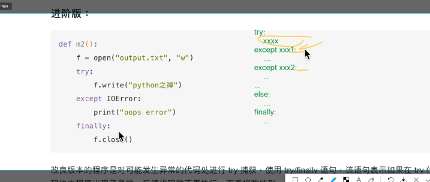
else什么时候执行? 只有try中的代码执行完没有产生任何的异常然后执行else中的代码
Exception 这个异常代表的是所有的异常,如果前面的异常都没有捕获到的话就会执行这个异常的处理
高级版：¶
def m3(): with open("output.txt", "r") as f: f.write("Python之禅")
一种更加简洁、优雅的方式就是用 with 关键字。open 方法的返回值赋值给变量 f，当离开 with 代码块的时候，系统会自动调用 f.close() 方法， with 的作用和使用 try/finally 语句是一样的。那么它的实现原理是什么？在讲 with 的原理前要涉及到另外一个概念，就是上下文管理器（Context Manager）。
什么是上下文(context)¶
上下文在不同的地方表示不同的含义，要感性理解。context其实说白了，和文章的上下文是一个意思，在通俗一点，我觉得叫环境更好。....
林冲大叫一声“啊也！”....
问:这句话林冲的“啊也”表达了林冲怎样的心里？
答:啊你妈个头啊！
看，一篇文章，给你摘录一段，没前没后，你读不懂，因为有语境，就是语言环境存在，一段话说了什么，要通过上下文(文章的上下文)来推断。
app点击一个按钮进入一个新的界面，也要保存你是在哪个屏幕跳过来的等等信息，以便你点击返回的时候能正确跳回，如果不存肯定就无法正确跳回了。
看这些都是上下文的典型例子，理解成环境就可以，(而且上下文虽然叫上下文，但是程序里面一般都只有上文而已，只是叫的好听叫上下文。。进程中断在操作系统中是有上有下的，不过不这个高深的问题就不要深究了。。。)
上下文管理器¶
任何实现了 enter() 和 exit() 方法的对象都可称之为上下文管理器，上下文管理器对象可以使用 with 关键字。显然，文件（file）对象也实现了上下文管理器。
那么文件对象是如何实现这两个方法的呢？我们可以模拟实现一个自己的文件类，让该类实现 enter() 和 exit() 方法。
class File(): def __init__(self, filename, mode): self.filename = filename self.mode = mode def __enter__(self): print("entering") self.f = open(self.filename, self.mode) return self.f def __exit__(self, *args): print("will exit") self.f.close()
enter() 方法返回资源对象，这里就是你将要打开的那个文件对象，exit() 方法处理一些清除工作。
因为 File 类实现了上下文管理器，现在就可以使用 with 语句了。
with File('out.txt', 'w') as f: print("writing") f.write('hello, python')
这样，你就无需显示地调用 close 方法了，由系统自动去调用，哪怕中间遇到异常 close 方法也会被调用。
实现上下文管理器的另外方式¶
Python 还提供了一个 contextmanager 的装饰器，更进一步简化了上下文管理器的实现方式。通过 yield 将函数分割成两部分，yield 之前的语句在 enter 方法中执行，yield 之后的语句在 exit 方法中执行。紧跟在 yield 后面的值是函数的返回值。
from contextlib import contextmanager @contextmanager def my_open(path, mode): f = open(path, mode) yield f f.close()
调用
with my_open('out.txt', 'w') as f:
f.write("hello , the simplest context manager")
总结¶
Python 提供了 with 语法用于简化资源操作的后续清除操作，是 try/finally 的替代方法，实现原理建立在上下文管理器之上。此外，Python 还提供了一个 contextmanager 装饰器，更进一步简化上下管理器的实现方式。